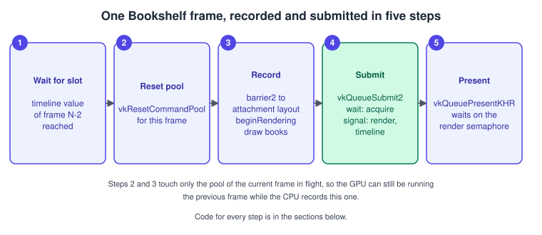
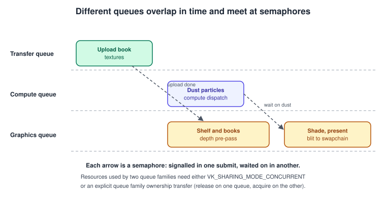
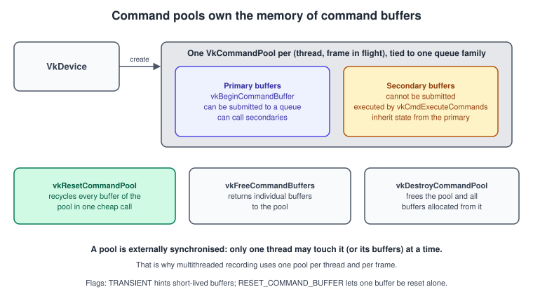
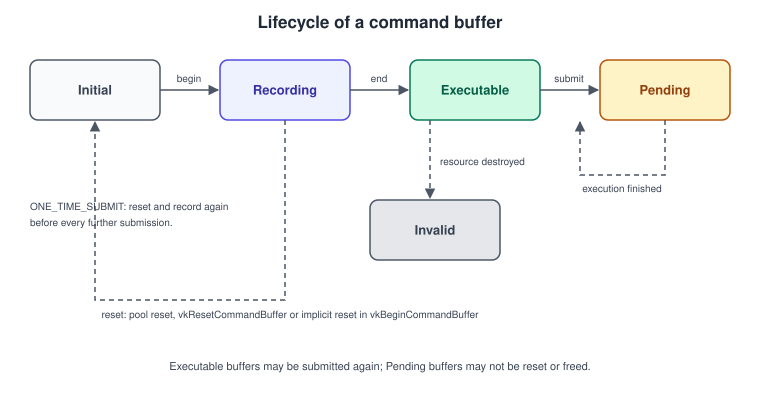
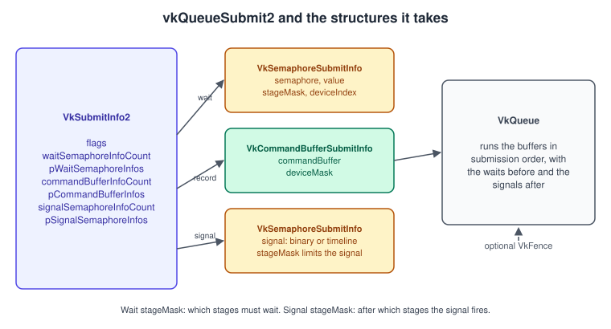
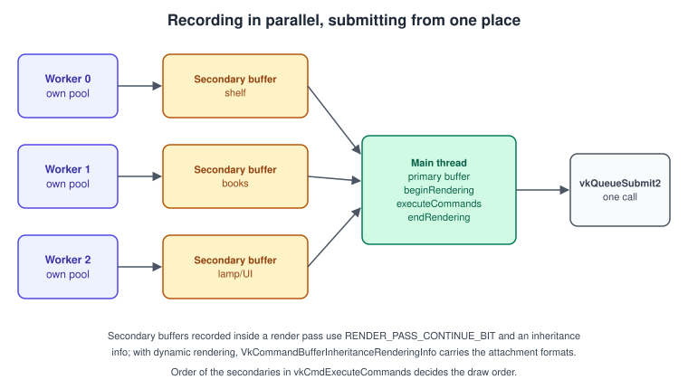

Queues and Command Buffers
|
This content was generated with the assistance of AI and should be verified against the official documentation before being relied on in production. |
Vulkan never draws immediately. Every draw, copy, dispatch and barrier is first recorded into a command buffer, and the command buffer is later submitted to a queue, where the GPU executes it at some point in the future, possibly while the CPU is already recording the next frame. This split is the single biggest difference from OpenGL’s immediate model and is the reason Vulkan can scale recording across threads and keep the GPU busy. Understanding queues, command pools, command buffers and submission is the foundation that synchronisation, swapchains and every later page build on.
The facts were checked in November 2026. The version documented is Vulkan 1.4 (Vulkan-Headers 1.4.3xx, LunarG SDK 1.4.363.0),
using the Vulkan 1.3 core commands vkQueueSubmit2, vkCmdPipelineBarrier2 and vkCmdBeginRendering; Vulkan 1.3 is the minimum for
the running example and there is no Vulkan 1.4 requirement on this page. Everything applies on Windows, Linux, Android, and macOS or
iOS through the portability layers.
This is the third stage of the Vulkan Bookshelf running example (C++20, Vulkan-Hpp RAII, VMA, GLFW or SDL3 and Slang shaders with GLSL and HLSL alternatives). The device and queues come from Physical and Logical Devices. This page records and submits the first frame; the barriers inside it are explained in Synchronization and sync2, the acquire and present half in Window System Integration and Swapchain, and the frame pacing in Timeline Semaphores and Frames in Flight. The conceptual background is in Explicit vs Implicit APIs and Game Loop and Frame Timing.
Recording, submitting, executing

Three things happen at three different times.
-
Recording is a CPU activity. Functions named
vkCmd...append commands to a command buffer. They do no GPU work and return immediately, so recording many commands is cheap. Recording needs only the command buffer (and the pool it came from), not a queue. -
Submission hands finished command buffers to a queue with
vkQueueSubmit2. The call returns when the work is queued, not when it is done. Semaphores order work between submissions; a fence tells the CPU that a submission has finished. -
Execution is on the GPU, asynchronously. Commands in one command buffer, and command buffers in one queue, start in submission order but may finish and overlap in any order unless a barrier or semaphore says otherwise.
That last sentence is the source of most Vulkan bugs: submission order is not completion order. The explicit ordering tools are the subject of the synchronisation pages; this page shows where they plug in.
Queues
A queue is where work executes. Queues are grouped in families, and every family has a set of capability flags (graphics, compute,
transfer, sparse binding, protected, video). The queue families, how to find a family that can also present, and how queues are created
with vkCreateDevice are in Physical and Logical Devices. Here are the
rules that matter for submission:
-
A command buffer is allocated from a pool created for one queue family and can only be submitted to queues of that family. Submitting to another family is invalid.
-
vkQueueSubmit2,vkQueuePresentKHRandvkQueueBindSparseon the sameVkQueueare externally synchronised: two threads must not call them on one queue at the same time. Either submit from one thread or protect the queue with a mutex. Different queues can be used from different threads freely. -
Work submitted to one queue starts in order; work on different queues has no ordering at all unless you add semaphores.
-
A queue is not a thread. Multiple queues of one family may or may not execute in parallel; the driver decides. One universal queue that does everything is a valid design and the right start.
-
vkQueueWaitIdleblocks until a queue is idle andvkDeviceWaitIdleuntil every queue of the device is idle. Use them for shutdown and resizing, never per frame.

Why use more than one queue? A dedicated transfer family can stream textures while the graphics queue draws; a compute family can run
simulation (the Bookshelf’s dust particles) while graphics shades the shelf; a second graphics-capable queue can feed independent
work. The costs are cross-queue semaphores, queue family ownership transfers for resources created with
VK_SHARING_MODE_EXCLUSIVE, and the risk that two queues of one family fight over the same hardware. Measure before adopting them.
Command pools
A VkCommandPool is the allocator behind command buffers. It owns the memory in which commands are recorded and is created for one
queue family.

VkCommandPoolCreateFlagBits |
Meaning | Advice |
|---|---|---|
|
Hint that buffers from the pool are short-lived and will be reset or freed soon, so the implementation can adjust its allocation strategy. |
Use for pools of one-time-submit buffers, such as upload helpers. For a per-frame pool that you reset every frame it is also appropriate. |
|
Allows each buffer of the pool to be reset on its own, by |
Not needed if you reset the whole pool each frame, which is cheaper and the recommended pattern. |
|
Command buffers from the pool are protected command buffers. |
Only for protected content on protected queues. |
vkResetCommandPool returns the memory of all command buffers of the pool to the pool in one call (every buffer goes back to the initial
state). Its flag VK_COMMAND_POOL_RESET_RELEASE_RESOURCES_BIT also returns the memory to the system, which you rarely want per frame because
the pool then has to allocate again. vkTrimCommandPool (core 1.1) lets the driver release unused memory without resetting.
The pool-per-thread-per-frame pattern
A pool is externally synchronised, meaning that Vulkan does not lock it: two threads that touch the same pool, or buffers allocated from it,
at the same time cause undefined behaviour. The standard answer, which the Vulkan Guide recommends, is one pool per host thread. Frames in flight
add a second dimension: a pool cannot be reset while the GPU is still executing buffers allocated from it. So the usual structure is a
pool for every (thread, frame in flight) pair. At the start of a frame you wait until the GPU has finished the frame that last used the slot
(a fence or a timeline semaphore value, see
Timeline Semaphores and Frames in Flight), then you
vkResetCommandPool and re-record. With two frames in flight and three threads that is six pools.
Creating a pool and a buffer
// frame_resources.hpp - per-frame command pool and primary command buffer (C++20, Vulkan-Hpp RAII)
#include <vulkan/vulkan_raii.hpp>
#include <array>
#include <cstdint>
#include <utility>
constexpr uint32_t kFramesInFlight = 2;
struct FrameResources {
vk::raii::CommandPool pool{nullptr};
vk::raii::CommandBuffer cmd{nullptr};
vk::raii::Semaphore imageAvailable{nullptr}; // binary, signalled by vkAcquireNextImageKHR
uint64_t timelineValue = 0; // timeline value that marks this slot as finished
};
inline FrameResources makeFrame(const vk::raii::Device& device, uint32_t queueFamily) {
FrameResources f;
// No RESET_COMMAND_BUFFER flag: we reset the whole pool once per frame instead.
f.pool = vk::raii::CommandPool(device, vk::CommandPoolCreateInfo{
vk::CommandPoolCreateFlagBits::eTransient, queueFamily});
vk::CommandBufferAllocateInfo alloc{*f.pool, vk::CommandBufferLevel::ePrimary, 1};
vk::raii::CommandBuffers buffers(device, alloc); // returns std::vector<vk::raii::CommandBuffer>
f.cmd = std::move(buffers.front());
f.imageAvailable = vk::raii::Semaphore(device, vk::SemaphoreCreateInfo{});
return f;
}
inline std::array<FrameResources, kFramesInFlight> makeFrames(const vk::raii::Device& device,
uint32_t queueFamily) {
return {makeFrame(device, queueFamily), makeFrame(device, queueFamily)};
}Command buffers
VkCommandBuffer handles are allocated with vkAllocateCommandBuffers (VkCommandBufferAllocateInfo: the pool, a level and a count) and
live until the pool is reset or destroyed or they are freed individually. There are two levels.
| Level | Can be submitted to a queue | Can call other buffers | Typical use |
|---|---|---|---|
|
Yes |
Yes, secondary buffers through |
The frame’s main buffer; one or a few per frame. |
|
No |
Only through a primary (nested secondary execution needs the |
Recorded in parallel on worker threads, or recorded once and reused for static geometry. |
The life cycle

-
Initial: just allocated or reset. The only way forward is
vkBeginCommandBuffer. -
Recording: commands may be appended. A buffer in this state is not yet submittable. Recording one buffer from two threads is a race.
-
Executable:
vkEndCommandBufferfinished. The buffer can be submitted, and, unless it was recorded for one-time submission, submitted again and again. -
Pending: submitted and not known to be finished. You may not reset, free or re-record it. When the GPU has finished (the CPU must know this through a fence, a timeline value or a queue wait) it is no longer pending.
-
Invalid: something it used was destroyed, or it was recorded for one-time use and has run. It can only be reset or freed.
VkCommandBufferBeginInfo::flags records the intent:
VkCommandBufferUsageFlagBits |
Meaning | Advice |
|---|---|---|
|
Each recording is submitted once, then the buffer is reset and recorded again before the next submission. |
The right choice for per-frame buffers that are re-recorded every frame, and for upload helpers. |
|
For a secondary buffer: it lies entirely inside one render pass instance (including a dynamic rendering instance). Ignored for primaries. |
Required for secondaries that draw; see the multithreaded example. |
|
The buffer may be resubmitted while it is still pending, and may be recorded into several primary buffers. |
Rare, and it can disable driver optimisations. Prefer re-recording or one buffer per frame in flight. |
For secondary buffers VkCommandBufferBeginInfo::pInheritanceInfo points to a VkCommandBufferInheritanceInfo; for dynamic rendering the
render pass handle is null and a VkCommandBufferInheritanceRenderingInfo is chained into it (see the multithreaded section). For primaries
the pointer is ignored.
What recording does and does not do
-
State is per command buffer. Pipeline, descriptor sets, vertex buffers, dynamic state and push constants bound in one command buffer are not visible in another, and a secondary buffer does not inherit the primary’s bound state (only render pass or rendering state, and some query state, through the inheritance info). After
vkCmdExecuteCommandsthe primary’s bound state is undefined, so rebind what you need. A new command buffer starts with nothing bound, so a draw without a pipeline is invalid. -
Objects are not reference counted. The command buffer stores handles, not ownership. A pipeline, buffer or image view destroyed while a pending buffer still uses it is a bug that the validation layer catches only if you run with it. Keep resources alive until the fence or timeline value says the frame is complete.
-
Recording is not validated until it is used. Many errors (a missing barrier, wrong image layout) are reported at record time by the validation layer, but their effect appears only at execution. Run with the Khronos validation layer and synchronisation validation during development.
-
Reset on begin. If the pool has
RESET_COMMAND_BUFFER_BIT, callingvkBeginCommandBufferon an executable buffer implicitly resets it. Without the flag you must reset the pool or allocate again. -
Debug labels.
vkCmdBeginDebugUtilsLabelEXTandvkCmdEndDebugUtilsLabelEXTgroup commands under a name in RenderDoc and other captures; see Validation and Debug Utils. -
Commands that need a specific queue. Each
vkCmdcommand lists the queue capabilities it needs (graphics, compute, transfer), and whether it may appear inside or outside a rendering instance. A compute dispatch recorded in a buffer that is submitted to a family without compute is invalid.
Recording the Bookshelf frame
The next listing records the first complete frame of the running example: it transitions the swapchain image, begins dynamic rendering with a cleared colour attachment, draws, ends rendering and transitions the image for presentation. The pipeline and vertex buffer come from later pages (Graphics Pipeline Overview, Vertex Input and Drawing); the barriers use the synchronization2 structures explained in Synchronization and sync2, and the rendering call in Dynamic Rendering.
// record_frame.cpp - record one frame with synchronization2 barriers and dynamic rendering
#include <vulkan/vulkan_raii.hpp>
#include <array>
namespace {
// A color image barrier written with the Vulkan 1.3 sync2 structure (stage and access are in the barrier itself).
void transitionColor(const vk::raii::CommandBuffer& cmd, vk::Image image,
vk::ImageLayout from, vk::ImageLayout to,
vk::PipelineStageFlags2 srcStage, vk::AccessFlags2 srcAccess,
vk::PipelineStageFlags2 dstStage, vk::AccessFlags2 dstAccess) {
vk::ImageMemoryBarrier2 barrier;
barrier.setSrcStageMask(srcStage)
.setSrcAccessMask(srcAccess)
.setDstStageMask(dstStage)
.setDstAccessMask(dstAccess)
.setOldLayout(from)
.setNewLayout(to)
.setSrcQueueFamilyIndex(vk::QueueFamilyIgnored)
.setDstQueueFamilyIndex(vk::QueueFamilyIgnored)
.setImage(image)
.setSubresourceRange({vk::ImageAspectFlagBits::eColor, 0, 1, 0, 1});
vk::DependencyInfo dep;
dep.setImageMemoryBarriers(barrier);
cmd.pipelineBarrier2(dep);
}
} // namespace
void recordFrame(const vk::raii::CommandBuffer& cmd,
vk::Image swapImage, vk::ImageView swapView, vk::Extent2D extent,
const vk::raii::Pipeline& pipeline, const vk::raii::Buffer& vertexBuffer,
uint32_t vertexCount) {
cmd.begin(vk::CommandBufferBeginInfo{vk::CommandBufferUsageFlagBits::eOneTimeSubmit});
// 1. UNDEFINED -> ATTACHMENT_OPTIMAL. Wait for the acquire semaphore stage, then allow color writes.
transitionColor(cmd, swapImage,
vk::ImageLayout::eUndefined, vk::ImageLayout::eColorAttachmentOptimal,
vk::PipelineStageFlagBits2::eColorAttachmentOutput, {},
vk::PipelineStageFlagBits2::eColorAttachmentOutput,
vk::AccessFlagBits2::eColorAttachmentWrite);
// 2. Begin dynamic rendering: no VkRenderPass, no VkFramebuffer.
vk::RenderingAttachmentInfo color;
color.setImageView(swapView)
.setImageLayout(vk::ImageLayout::eColorAttachmentOptimal)
.setLoadOp(vk::AttachmentLoadOp::eClear)
.setStoreOp(vk::AttachmentStoreOp::eStore)
.setClearValue(vk::ClearValue{vk::ClearColorValue{std::array<float, 4>{0.08f, 0.07f, 0.10f, 1.0f}}});
vk::RenderingInfo rendering;
rendering.setRenderArea({{0, 0}, extent})
.setLayerCount(1)
.setColorAttachments(color);
cmd.beginRendering(rendering);
// 3. Draw. Viewport and scissor are dynamic state set per command buffer.
cmd.bindPipeline(vk::PipelineBindPoint::eGraphics, *pipeline);
const vk::Viewport viewport{0.0f, 0.0f, static_cast<float>(extent.width),
static_cast<float>(extent.height), 0.0f, 1.0f};
cmd.setViewport(0, viewport);
cmd.setScissor(0, vk::Rect2D{{0, 0}, extent});
cmd.bindVertexBuffers(0, {*vertexBuffer}, {vk::DeviceSize{0}});
cmd.draw(vertexCount, 1, 0, 0);
cmd.endRendering();
// 4. ATTACHMENT_OPTIMAL -> PRESENT_SRC. Present has no access flags; the render-finished semaphore makes it visible.
transitionColor(cmd, swapImage,
vk::ImageLayout::eColorAttachmentOptimal, vk::ImageLayout::ePresentSrcKHR,
vk::PipelineStageFlagBits2::eColorAttachmentOutput,
vk::AccessFlagBits2::eColorAttachmentWrite,
vk::PipelineStageFlagBits2::eNone, {});
cmd.end();
}Submitting with vkQueueSubmit2
Vulkan 1.3 made vkQueueSubmit2 core (from VK_KHR_synchronization2, where it is vkQueueSubmit2KHR) and it replaces vkQueueSubmit. It takes an
array of VkSubmitInfo2 and an optional fence.

| Structure and member | Meaning |
|---|---|
|
|
|
Semaphores to wait on before the listed command buffers begin. Each |
|
The command buffers, in order, as |
|
Semaphores to signal when all command buffers of this submit info finished, with the value to signal for timelines and a |
|
Signalled when everything in all submit infos of the call has finished. Optional, but you need some CPU-visible completion signal per frame (a fence or a timeline value). |
The differences from vkQueueSubmit are worth noting because older code and both books use the old form:
-
Stage masks are 64-bit
VkPipelineStageFlags2and attach to each wait and each signal, instead of a parallel array next to the wait semaphores. -
Timeline values are fields of
VkSemaphoreSubmitInfo, so noVkTimelineSemaphoreSubmitInfostructure is chained. -
Command buffers are wrapped in
VkCommandBufferSubmitInfo, which has room for a device mask. -
The
synchronization2feature must be enabled on the device (core feature of Vulkan 1.3). -
Semaphore signal operations have a stage mask too: a signal only waits for the work of the stages given, which can let later work start earlier.
Rules to keep in mind: a binary semaphore must be unsignalled when a signal on it executes and must have a pending signal before a wait is submitted; a fence passed in must be unsignalled and not in use by another submission; a command buffer that is pending must not be submitted again unless it was recorded with the simultaneous-use flag; and a queue family ownership acquire needs a matching release submitted earlier.
Submitting and presenting the frame
The frame loop below shows one iteration with two frames in flight. It waits for the slot’s timeline value, resets the pool, acquires an image, records, submits with a wait on the acquire semaphore and a signal of both the render-finished binary semaphore and the timeline value, and presents.
// frame_loop.cpp - one iteration of the Bookshelf frame loop (C++20, Vulkan-Hpp RAII)
#include <vulkan/vulkan_raii.hpp>
#include <cstdint>
#include <vector>
struct Renderer {
vk::raii::Device& device;
vk::raii::Queue& queue; // graphics + present
vk::raii::SwapchainKHR& swapchain;
std::vector<vk::Image> swapImages; // owned by the swapchain
std::vector<vk::raii::ImageView> swapViews;
std::vector<vk::raii::Semaphore> renderFinished; // one per swapchain image
vk::raii::Semaphore& timeline; // semaphore of type TIMELINE, initial value 0
std::array<FrameResources, kFramesInFlight> frames;
vk::Extent2D extent; // swapchain extent
vk::raii::Pipeline& pipeline; // the triangle or book pipeline
vk::raii::Buffer& vertexBuffer;
uint64_t nextValue = 1; // next timeline value to signal
uint32_t frameIndex = 0;
};
void drawFrame(Renderer& r) {
FrameResources& f = r.frames[r.frameIndex];
// 1. Wait until the GPU finished the frame that used this slot (CPU wait on the timeline value).
if (f.timelineValue != 0) {
vk::Semaphore sem = *r.timeline;
uint64_t value = f.timelineValue;
vk::SemaphoreWaitInfo waitInfo;
waitInfo.setSemaphores(sem).setValues(value);
(void)r.device.waitSemaphores(waitInfo, UINT64_MAX);
}
// 2. Now nothing from this slot is pending: recycle the pool and all its buffers.
f.pool.reset(); // vkResetCommandPool
// 3. Acquire an image; imageAvailable is signalled when the presentation engine releases it.
auto [acquireResult, imageIndex] = r.swapchain.acquireNextImage(UINT64_MAX, *f.imageAvailable);
// (handle out-of-date and suboptimal results as described on the swapchain page)
// 4. Record.
recordFrame(f.cmd, r.swapImages[imageIndex], *r.swapViews[imageIndex], r.extent,
r.pipeline, r.vertexBuffer, 3);
// 5. Submit: wait for the acquire at the color-attachment stage, signal render-finished (for present) and the timeline.
vk::SemaphoreSubmitInfo wait{*f.imageAvailable, 0, vk::PipelineStageFlagBits2::eColorAttachmentOutput};
const uint64_t signalValue = r.nextValue++;
std::array<vk::SemaphoreSubmitInfo, 2> signals{
vk::SemaphoreSubmitInfo{*r.renderFinished[imageIndex], 0, vk::PipelineStageFlagBits2::eAllCommands},
vk::SemaphoreSubmitInfo{*r.timeline, signalValue, vk::PipelineStageFlagBits2::eAllCommands}};
vk::CommandBufferSubmitInfo cmdInfo{*f.cmd};
vk::SubmitInfo2 submit;
submit.setWaitSemaphoreInfos(wait)
.setCommandBufferInfos(cmdInfo)
.setSignalSemaphoreInfos(signals);
r.queue.submit2(submit); // vkQueueSubmit2, no fence: the timeline value is the completion signal
f.timelineValue = signalValue;
// 6. Present, waiting on the binary semaphore that this image's submission signals.
vk::Semaphore presentWait = *r.renderFinished[imageIndex];
vk::SwapchainKHR sc = *r.swapchain;
vk::PresentInfoKHR present;
present.setWaitSemaphores(presentWait).setSwapchains(sc).setImageIndices(imageIndex);
(void)r.queue.presentKHR(present); // may report out-of-date or suboptimal
r.frameIndex = (r.frameIndex + 1) % kFramesInFlight;
}Source: vkQueueSubmit2; Vulkan Guide: Synchronization examples (swapchain image acquire and present)
Reading the loop:
-
The render-finished semaphore is indexed by swapchain image and the acquire semaphore by frame slot. Binary semaphores used with a swapchain follow strict reuse rules, explained with the swapchain and in Timeline Semaphores and Frames in Flight.
-
vkAcquireNextImageKHRandvkQueuePresentKHRare not part ofvkQueueSubmit2. The acquire semaphore goes into the wait list of the submission that first uses the image, with the stage maskCOLOR_ATTACHMENT_OUTPUThere because that is where the image is first written. If you wrote to the image earlier (for example with a transfer clear) the stage mask would have to include that stage. -
The signal stage mask is
ALL_COMMANDSfor simplicity; finer masks are possible but rarely matter. -
recordFrameis the function from the previous listing;FrameResourcesandkFramesInFlightcome from the pool listing.
One-time submits for uploads
Loading a texture or a vertex buffer is an immediate task: allocate a buffer, record copies, submit, wait. A tiny helper does this and is the pattern the Bookshelf uses for its staging uploads (see Memory Heaps, Types and VMA).
// one_time_submit.hpp - record, submit and wait for a one-off command buffer
#include <vulkan/vulkan_raii.hpp>
#include <cstdint>
#include <utility>
class UploadContext {
public:
UploadContext(const vk::raii::Device& device, uint32_t family, vk::raii::Queue& queue)
: device_(device), queue_(queue),
pool_(device, vk::CommandPoolCreateInfo{vk::CommandPoolCreateFlagBits::eTransient, family}),
fence_(device, vk::FenceCreateInfo{}) {}
// record(cmd) appends commands; the call returns when the GPU has finished them.
template <class Record>
void run(Record&& record) {
vk::CommandBufferAllocateInfo alloc{*pool_, vk::CommandBufferLevel::ePrimary, 1};
vk::raii::CommandBuffers buffers(device_, alloc);
vk::raii::CommandBuffer& cmd = buffers.front();
cmd.begin(vk::CommandBufferBeginInfo{vk::CommandBufferUsageFlagBits::eOneTimeSubmit});
record(cmd);
cmd.end();
vk::CommandBufferSubmitInfo cmdInfo{*cmd};
vk::SubmitInfo2 submit;
submit.setCommandBufferInfos(cmdInfo);
queue_.submit2(submit, *fence_);
vk::Fence fence = *fence_;
(void)device_.waitForFences(fence, VK_TRUE, UINT64_MAX);
device_.resetFences(fence);
pool_.reset(); // every buffer of the pool returns to the initial state
}
private:
const vk::raii::Device& device_;
vk::raii::Queue& queue_;
vk::raii::CommandPool pool_;
vk::raii::Fence fence_;
};
// Usage: copy a staging buffer into a device-local vertex buffer.
inline void uploadBuffer(UploadContext& ctx, vk::Buffer staging, vk::Buffer target, vk::DeviceSize size) {
ctx.run([&](const vk::raii::CommandBuffer& cmd) {
const vk::BufferCopy2 region{0, 0, size};
cmd.copyBuffer2(vk::CopyBufferInfo2{staging, target, region}); // copy_commands2, core 1.3
});
}Blocking per upload is fine at load time and wasteful in a loop: batch many copies into one buffer and one submit, or move uploads to a transfer queue with its own pool and a semaphore, so that the frame does not stall.
The same submit with the C API
// C API equivalent of the frame submit (no Vulkan-Hpp)
VkSemaphoreSubmitInfo wait{VK_STRUCTURE_TYPE_SEMAPHORE_SUBMIT_INFO};
wait.semaphore = imageAvailable;
wait.stageMask = VK_PIPELINE_STAGE_2_COLOR_ATTACHMENT_OUTPUT_BIT;
VkSemaphoreSubmitInfo signals[2]{};
signals[0] = {VK_STRUCTURE_TYPE_SEMAPHORE_SUBMIT_INFO};
signals[0].semaphore = renderFinished;
signals[0].stageMask = VK_PIPELINE_STAGE_2_ALL_COMMANDS_BIT;
signals[1] = {VK_STRUCTURE_TYPE_SEMAPHORE_SUBMIT_INFO};
signals[1].semaphore = timeline;
signals[1].value = signalValue; // used because this is a timeline semaphore
signals[1].stageMask = VK_PIPELINE_STAGE_2_ALL_COMMANDS_BIT;
VkCommandBufferSubmitInfo cmdInfo{VK_STRUCTURE_TYPE_COMMAND_BUFFER_SUBMIT_INFO};
cmdInfo.commandBuffer = cmd;
VkSubmitInfo2 submit{VK_STRUCTURE_TYPE_SUBMIT_INFO_2};
submit.waitSemaphoreInfoCount = 1;
submit.pWaitSemaphoreInfos = &wait;
submit.commandBufferInfoCount = 1;
submit.pCommandBufferInfos = &cmdInfo;
submit.signalSemaphoreInfoCount = 2;
submit.pSignalSemaphoreInfos = signals;
VkResult result = vkQueueSubmit2(queue, 1, &submit, VK_NULL_HANDLE);Source: vkQueueSubmit2
Several queues: asynchronous compute and transfer
Using a second queue means a second submission and a semaphore between them. The Bookshelf’s dust particles are a compute dispatch that writes a vertex buffer which the graphics queue draws as points one frame later. With a timeline semaphore the dependency is one value: the compute submission signals value N, the graphics submission waits for N.
// async_compute.cpp - compute queue produces particles, graphics queue consumes them
void submitFrame(Renderer& r, const vk::raii::CommandBuffer& computeCmd, const vk::raii::CommandBuffer& graphicsCmd) {
const uint64_t dustReady = r.nextValue++;
const uint64_t frameDone = r.nextValue++;
// Compute queue: no waits (inputs are from the previous frame), signal dustReady.
vk::CommandBufferSubmitInfo computeInfo{*computeCmd};
vk::SemaphoreSubmitInfo computeSignal{*r.timeline, dustReady, vk::PipelineStageFlagBits2::eComputeShader};
vk::SubmitInfo2 computeSubmit;
computeSubmit.setCommandBufferInfos(computeInfo).setSignalSemaphoreInfos(computeSignal);
r.computeQueue.submit2(computeSubmit);
// Graphics queue: the vertex stage that reads the particle buffer waits for dustReady.
// The earlier stages (shelf and books) can start without waiting.
vk::SemaphoreSubmitInfo gfxWait{*r.timeline, dustReady, vk::PipelineStageFlagBits2::eVertexAttributeInput};
vk::CommandBufferSubmitInfo gfxInfo{*graphicsCmd};
vk::SemaphoreSubmitInfo gfxSignal{*r.timeline, frameDone, vk::PipelineStageFlagBits2::eAllCommands};
vk::SubmitInfo2 gfxSubmit;
gfxSubmit.setWaitSemaphoreInfos(gfxWait).setCommandBufferInfos(gfxInfo).setSignalSemaphoreInfos(gfxSignal);
r.graphicsQueue.submit2(gfxSubmit);
}Three details decide whether this is correct. First, the particle buffer must be usable by both queue families: either created with
VK_SHARING_MODE_CONCURRENT and the indices of both families, or exclusive with a queue family ownership transfer made of a release
barrier on the compute queue and a matching acquire barrier on the graphics queue (see
Synchronization and sync2); when both roles run on the same family none of this is
needed. Second, the stage mask of the wait is as late as possible, so the graphics queue is not held up before it needs the data. Third, a
timeline value that is waited on must eventually be signalled by something already submitted or submittable; a wait with no matching signal
hangs the queue.
Multithreaded recording

Recording is the part of a Vulkan frame that scales with threads because command pools are independent. Two patterns exist:
-
Several primary buffers, one per thread, all submitted in one
vkQueueSubmit2call (thepCommandBufferInfosarray defines their order). Each primary contains its own barriers and its ownvkCmdBeginRendering/vkCmdEndRendering, so a single render pass instance cannot span them. This is the simplest option when work splits into passes (shadow map, main scene, UI). -
One primary and several secondaries. The primary begins rendering with the flag
VK_RENDERING_CONTENTS_SECONDARY_COMMAND_BUFFERS_BIT, executes the secondaries withvkCmdExecuteCommandsand ends rendering; each secondary was recorded withRENDER_PASS_CONTINUE_BITand aVkCommandBufferInheritanceRenderingInfothat repeats the attachment formats. Use this when one pass has many draws that you want to split across threads.
When a rendering instance is begun with the secondary-contents flag, the primary may not record draws or other commands inside it: only
vkCmdExecuteCommands is allowed until vkCmdEndRendering. The inheritance info must match the begin info: colour attachment count and formats,
depth and stencil formats (VK_FORMAT_UNDEFINED when absent), view mask, sample count, and the rendering flags except the secondary-contents bit.
// parallel_record.cpp - three workers record secondary buffers; the main thread executes them (C++20)
#include <vulkan/vulkan_raii.hpp>
#include <functional>
#include <thread>
#include <vector>
struct WorkerPool {
vk::raii::CommandPool pool{nullptr}; // one per thread and frame slot, created for the graphics family
vk::raii::CommandBuffer secondary{nullptr};
};
// Records one secondary buffer for a draw list; runs on a worker thread, touching only its own pool.
void recordSecondary(WorkerPool& w, vk::Format colorFormat, vk::Format depthFormat, vk::Extent2D extent,
const std::function<void(const vk::raii::CommandBuffer&)>& draws) {
vk::CommandBufferInheritanceRenderingInfo rendering;
rendering.setColorAttachmentFormats(colorFormat) // a vk::Format lvalue, copied by pointer
.setDepthAttachmentFormat(depthFormat)
.setRasterizationSamples(vk::SampleCountFlagBits::e1);
vk::CommandBufferInheritanceInfo inheritance;
inheritance.pNext = &rendering; // renderPass stays null with dynamic rendering
w.secondary.begin(vk::CommandBufferBeginInfo{
vk::CommandBufferUsageFlagBits::eOneTimeSubmit | vk::CommandBufferUsageFlagBits::eRenderPassContinue,
&inheritance});
// A secondary starts with no state bound: set dynamic state again.
w.secondary.setViewport(0, vk::Viewport{0, 0, float(extent.width), float(extent.height), 0.f, 1.f});
w.secondary.setScissor(0, vk::Rect2D{{0, 0}, extent});
draws(w.secondary);
w.secondary.end();
}
void recordInParallel(const vk::raii::CommandBuffer& primary, std::vector<WorkerPool>& workers,
std::vector<std::function<void(const vk::raii::CommandBuffer&)>>& drawLists,
vk::Format colorFormat, vk::Format depthFormat, vk::Extent2D extent,
const vk::RenderingInfo& renderingInfoWithSecondaryFlag) {
{
std::vector<std::jthread> threads;
for (size_t i = 0; i < workers.size(); ++i) {
threads.emplace_back([&, i] {
workers[i].pool.reset(); // allowed: this thread owns the pool; buffers return to initial
recordSecondary(workers[i], colorFormat, depthFormat, extent, drawLists[i]);
});
}
} // jthread destructors join: all secondaries are finished before the primary executes them
std::vector<vk::CommandBuffer> handles;
for (auto& w : workers) handles.push_back(*w.secondary);
primary.beginRendering(renderingInfoWithSecondaryFlag); // RenderingInfo.flags includes eContentsSecondaryCommandBuffers
primary.executeCommands(handles); // order here is the draw order
primary.endRendering();
}A pool reset returns every buffer allocated from it to the initial state, so each worker can begin its secondary buffer again without allocating; the listing keeps one secondary per worker for that reason. Pool state is private to each worker, so no locks are needed; the only shared point is the join before the primary executes. Two practical limits apply: secondaries cost driver overhead and are not free for very small draw lists, and every secondary must set its own dynamic state because nothing is inherited from the primary except the rendering inheritance info. More threading guidance, including pipeline caches and queries, is on Multithreading and Performance. The C++ threading side is in Threads and Synchronization in C++.
Presenting
vkQueuePresentKHR is a queue operation but not a command buffer: it takes wait semaphores, swapchains and image indices, and it is externally
synchronised on the queue like a submit. It returns results such as VK_SUBOPTIMAL_KHR and VK_ERROR_OUT_OF_DATE_KHR that tell you to recreate the
swapchain; in Vulkan-Hpp with exceptions enabled, out-of-date is thrown as an exception, so the call is usually wrapped. The present queue need not be
the graphics queue, but if it is another queue the image must be handed over with a queue family ownership transfer (or the swapchain must use
concurrent sharing). The full story is in
Window System Integration and Swapchain.
Shutting down
Destroy objects in the reverse order of creation, and only when the GPU is done with them. Before destroying anything the frame loop used, call
device.waitIdle() (vkDeviceWaitIdle) once. With RAII wrappers the destruction order follows member declaration order in reverse, so declare the
device before the pools, pipelines, semaphores and swapchain that depend on it. Command buffers need no explicit free: destroying the pool frees them.
Resizing the window is another point for a full wait before the swapchain and any size-dependent images are recreated.
Common mistakes
-
Resetting or re-recording a pending buffer or resetting a pool whose buffers are still running. Wait on the fence or timeline value first.
-
One pool shared by threads, or a pool used while another thread allocates buffers from it. Use one pool per thread and per frame slot.
-
Allocating and freeing a command buffer every frame. Allocate once and reset the pool.
-
A pool created with
RESET_COMMAND_BUFFER_BITand also reset per buffer every frame: more overhead than resetting the whole pool. -
Submitting to the wrong family, or recording compute commands in a buffer from a graphics-only family.
-
Forgetting
vkEndCommandBuffer, or submitting a buffer that is still recording. -
Expecting submit order to mean completion order, or expecting two queues to be ordered without a semaphore.
-
Waiting for the wrong stage. A wait stage mask of
TOP_OF_PIPEorALL_COMMANDSon the acquire semaphore either synchronises nothing useful or is needlessly strong; use the first stage that touches the image. -
Destroying a resource used by a pending buffer, which invalidates the buffer and is undefined if it is still executing.
-
Assuming state carries over between command buffers or after
vkCmdExecuteCommands. -
Submitting from two threads to one queue without a lock.
-
A timeline wait with no signal, which blocks forever.
-
Calling
vkQueueWaitIdleorvkDeviceWaitIdleevery frame, which removes all CPU and GPU overlap.
Performance notes
-
Reset whole pools instead of individual buffers; allocate nothing in the frame loop.
-
Batch: each
vkQueueSubmit2call has a fixed cost (the driver has to build and hand over work), so submit several command buffers with severalVkSubmitInfo2entries in one call instead of one call per buffer, and keep the number of submits per frame small (a handful, not hundreds). -
Record in parallel only when recording is a measured bottleneck. Draw call recording is cheap and a single thread can issue tens of thousands of draws per frame; split by pass or by large batches, not by single draws. Prefer fewer draws with instancing or indirect draws (Vertex Input and Drawing) before adding threads.
-
Prefer
ONE_TIME_SUBMITfor buffers that you re-record each frame; it lets the driver skip work needed to keep a buffer resubmittable. -
Use the narrowest stage masks in waits and signals so that independent work can overlap, and avoid full barriers and
ALL_COMMANDSunless profiling shows no gain from precision. -
Do not rely on queue priorities or on several queues of one family for parallelism; confirm with a profiler (see Debugging and Capture Tools).
-
Keep frames in flight at two (sometimes three); more adds latency without improving throughput, a trade-off described in Game Loop and Frame Timing.
-
On tile-based mobile GPUs keep a pass’s commands together: splitting one render pass across several submissions can force a costly flush of the tile memory.
What changed recently
| Date | Version | Change |
|---|---|---|
2016 |
Vulkan 1.0 |
|
2020 |
Vulkan 1.2 |
Timeline semaphores ( |
2022 |
Vulkan 1.3 |
|
December 2024 |
Vulkan 1.4 |
Dynamic rendering local read in core; global queue priority in core; every graphics or compute family must also advertise transfer, and implementations without host image copy must offer a separate transfer queue. |
2026 |
Roadmap 2026 |
Profile milestone that expects the Vulkan 1.3 and 1.4 features above on supported devices; see Versions, Profiles and Extensions. |
Where the books are out of date
| Book | What it says | Today |
|---|---|---|
Vulkan Programming Guide (VPG), chapter 3 |
Submit with |
|
VPG chapter 3 and VCB chapters 3 and 9 |
Pipeline barriers with |
|
VPG chapters 7 and 13, VCB chapter 6 |
Secondary command buffers inherit a |
With dynamic rendering the render pass handle is null and |
VPG chapter 1 and 13, VCB chapters 8 and 9 |
Multithreading described as one pool per thread and sequential submission, in the context of Vulkan 1.0 drivers. |
Still true and still the recommended pattern; add per-frame pools, |
Both |
One universal queue, and fences for every CPU wait. |
Dedicated compute and transfer families, global priority, timeline semaphores and |
See also
-
Physical and Logical Devices for creating the queues used here.
-
Synchronization and sync2 for the barriers recorded above.
-
Timeline Semaphores and Frames in Flight for pacing.
-
Window System Integration and Swapchain for acquire and present.
-
Bookshelf 1: Triangle to Textured Book for the whole first frame.
-
Hello Triangle with Metal 4 and Hello Triangle in OpenGL for how the other APIs handle command encoding and submission.